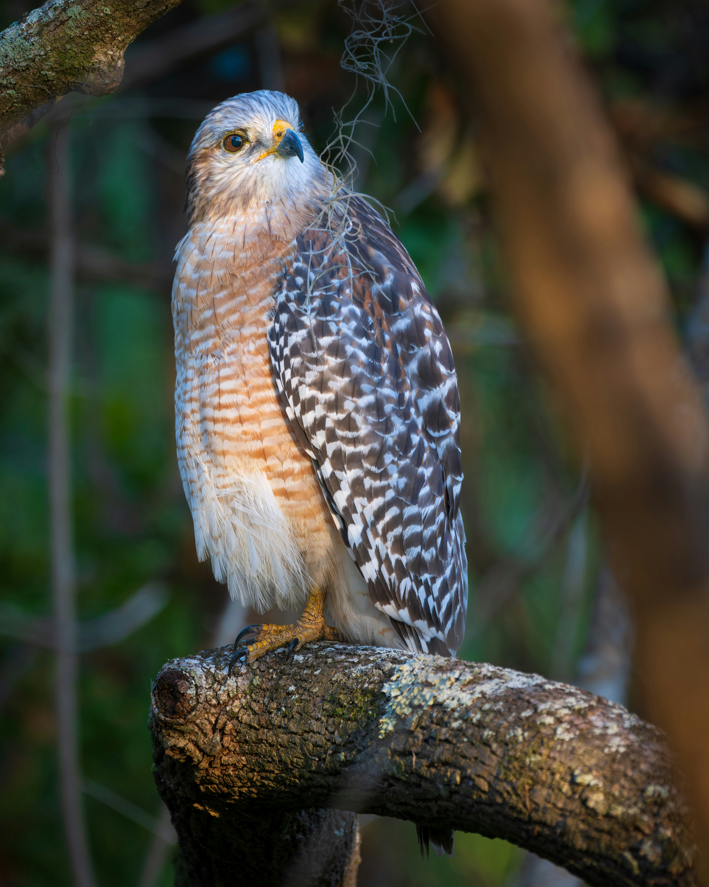

독수리 부리는 왜 노랄까??

독수리의 부리가 노란 이유는 주로 카로티노이드 색소 덕분입니다.
카로티노이드는 독수리가 섭취하는 먹이에서 얻는 자연색소로, 부리에 노란색을
부여합니다. 이 색소는 건강을 나타내는 신호로 작용하며, 특히 건강한
독수리는 더 선명한 부리 색을 가질 수 있습니다. 또한, 노란 부리는 번식과
관련된 신호를 전달하거나, 시각적 대비를 통해 독수리가 환경에서 더 잘 눈에
띄도록 도와줍니다. 따라서, 노란 부리는 독수리의 건강과 번식 성공에 중요한
역할을 할 수 있습니다.